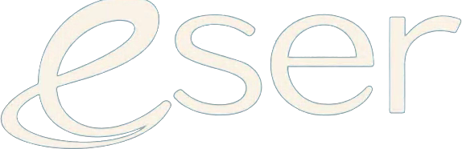

<title>Radar ESER</title>
<meta name="description" content="Radar de entrevistados de ESER: oportunidades de amplificación semana a semana.">
<style>
/* Layout: encabezado fijo con marca + KPIs, barra de filtros, y secciones por prioridad (olas fuertes → seguir → resto). Mundo visual único: noche/velvet. */
:root{
  --bg:#071826; --bg2:#0c2234; --card:#0f2738; --card2:#143047;
  --line:rgba(173,214,230,.11); --line2:rgba(173,214,230,.18);
  --fg:#eef1ea; --muted:#9cb3bf; --faint:#6b8290;
  --brand:#56c6e6; --brand2:#86d7ef; --gold:#e9b25a; --gold2:#f4ca80;
  --hot:#eab04a; --hot-bg:rgba(234,176,74,.13);
  --watch:#56c6e6; --watch-bg:rgba(86,198,230,.12);
  --quiet:#6f8795; --quiet-bg:rgba(111,135,149,.12);
  color-scheme:dark;
  --maxw:1120px;
  --f-display:"Fraunces",Georgia,"Times New Roman",serif;
  --f-body:"Hanken Grotesk",system-ui,-apple-system,sans-serif;
}
*{box-sizing:border-box}
body{
  margin:0;background:
    radial-gradient(100% 70% at 50% -5%, rgba(86,198,230,.14), transparent 55%),
    radial-gradient(90% 70% at 92% 8%, rgba(233,178,90,.09), transparent 52%),
    var(--bg);
  color:var(--fg);font-family:var(--f-body);line-height:1.5;
  -webkit-font-smoothing:antialiased;
}
.wrap{max-width:var(--maxw);margin:0 auto;padding-inline:20px;padding-block:0}
a{color:var(--brand2)}

/* header */
header.top{position:sticky;top:env(safe-area-inset-top,0px);z-index:20;
  background:linear-gradient(180deg,rgba(12,16,48,.96),rgba(12,16,48,.82));
  backdrop-filter:blur(10px);border-bottom:1px solid var(--line)}
.top .wrap{display:flex;align-items:center;gap:16px;padding-block:14px;flex-wrap:wrap}
.brand{display:flex;align-items:center;gap:13px;min-width:0}
.logo{height:40px;width:auto;display:block;filter:drop-shadow(0 2px 10px rgba(0,0,0,.45))}
.brand .div{width:1px;height:26px;background:var(--line2);flex:0 0 1px}
.brand .sub{font-size:.72rem;letter-spacing:.2em;text-transform:uppercase;color:var(--muted);
  font-weight:600;line-height:1.3}
.updated{margin-left:auto;font-size:.76rem;color:var(--faint);text-align:right;line-height:1.3}
.updated b{color:var(--muted);font-weight:600}

/* kpis */
.kpis{display:grid;grid-template-columns:repeat(4,1fr);gap:12px;margin-block:22px}
.kpi{background:var(--card);border:1px solid var(--line);border-radius:14px;padding:16px 16px}
.kpi .n{font-family:var(--f-display);font-size:2.1rem;font-weight:600;line-height:1;
  font-variant-numeric:tabular-nums}
.kpi.hot .n{color:var(--hot)} .kpi.gold .n{color:var(--gold)}
.kpi .l{font-size:.74rem;letter-spacing:.08em;text-transform:uppercase;color:var(--muted);
  margin-top:8px}

/* intro */
.intro{color:var(--muted);max-width:60ch;margin-block:4px 20px;font-size:1.02rem}
.intro b{color:var(--fg);font-weight:600}

/* filter bar */
.filters{position:sticky;top:calc(env(safe-area-inset-top,0px) + 64px);z-index:10;
  display:flex;gap:10px;align-items:center;flex-wrap:wrap;
  padding-block:12px;margin-bottom:6px;background:linear-gradient(180deg,var(--bg),rgba(12,16,48,.6) 70%,transparent)}
.chips{display:flex;gap:8px;flex-wrap:wrap}
.chip{border:1px solid var(--line2);background:transparent;color:var(--muted);
  font:inherit;font-size:.86rem;font-weight:600;padding:7px 13px;border-radius:999px;cursor:pointer;
  display:inline-flex;align-items:center;gap:7px}
.chip:hover{border-color:var(--brand);color:var(--fg)}
.chip[aria-pressed="true"]{background:var(--brand);border-color:var(--brand);color:#0b0f2e}
.chip .c{font-variant-numeric:tabular-nums;opacity:.8}
.search{margin-left:auto;flex:1 1 200px;min-width:160px;max-width:300px}
.search input{width:100%;background:var(--card);border:1px solid var(--line2);color:var(--fg);
  font:inherit;padding:9px 13px;border-radius:999px}
.search input::placeholder{color:var(--faint)}
.search input:focus{outline:2px solid var(--brand);outline-offset:1px;border-color:transparent}

/* section */
section{margin-block:14px 30px}
.shead{display:flex;align-items:center;gap:12px;margin-bottom:14px}
.shead h2{font-family:var(--f-display);font-weight:600;font-size:1.35rem;margin:0;text-wrap:balance}
.shead .rule{flex:1;height:1px;background:var(--line)}
.shead .tag{font-size:.72rem;text-transform:uppercase;letter-spacing:.14em;color:var(--muted);
  font-weight:600}

/* cards grid */
.grid{display:grid;grid-template-columns:repeat(2,1fr);gap:16px}
.card{background:var(--card);border:1px solid var(--line);border-radius:16px;overflow:hidden;
  display:flex;min-width:0}
.card .stripe{width:5px;flex:0 0 5px}
.card.hot .stripe{background:linear-gradient(var(--hot),var(--gold))}
.card.watch .stripe{background:var(--watch)}
.card .body{padding:16px 18px;min-width:0;flex:1}
.card .top-row{display:flex;align-items:flex-start;gap:10px;margin-bottom:2px}
.card h3{font-family:var(--f-display);font-weight:600;font-size:1.18rem;margin:0;line-height:1.15}
.card .pais{font-size:.76rem;color:var(--faint);margin-left:auto;white-space:nowrap;
  padding-top:5px}
.rubro{font-size:.82rem;color:var(--muted);margin:3px 0 10px}
.badge{display:inline-block;font-size:.68rem;font-weight:700;letter-spacing:.04em;
  padding:3px 9px;border-radius:999px;text-transform:uppercase}
.badge.grab{background:rgba(106,139,255,.16);color:var(--brand2)}
.badge.dos{background:rgba(227,194,122,.14);color:var(--gold2)}
.ep{font-size:.9rem;color:var(--fg);margin:2px 0 2px;font-style:italic;opacity:.92}
.tema{font-size:.86rem;color:var(--muted);margin:0 0 12px}
.rows{display:flex;flex-direction:column;gap:9px;margin-top:10px}
.row{display:flex;gap:9px;font-size:.86rem;align-items:flex-start}
.row .k{flex:0 0 18px;text-align:center;opacity:.9}
.row .v{min-width:0;color:var(--muted)}
.row .v b{color:var(--fg);font-weight:600}
.opp{margin-top:12px;background:var(--hot-bg);border:1px solid rgba(240,182,74,.25);
  border-radius:11px;padding:11px 12px}
.card.watch .opp{background:var(--watch-bg);border-color:rgba(106,139,255,.25)}
.opp .lab{font-size:.68rem;text-transform:uppercase;letter-spacing:.12em;font-weight:700;
  color:var(--gold2);display:flex;align-items:center;gap:6px;margin-bottom:4px}
.card.watch .opp .lab{color:var(--brand2)}
.opp .txt{font-size:.9rem;color:var(--fg)}

/* quiet list */
.qgrid{display:grid;grid-template-columns:repeat(3,1fr);gap:10px}
.q{background:var(--card);border:1px solid var(--line);border-radius:12px;padding:12px 13px;min-width:0}
.q .qn{font-weight:600;font-size:.96rem;display:flex;gap:8px;align-items:baseline}
.q .qn .qp{font-size:.72rem;color:var(--faint);margin-left:auto;white-space:nowrap}
.q .qr{font-size:.78rem;color:var(--muted);margin-top:3px;overflow:hidden;text-overflow:ellipsis;
  display:-webkit-box;-webkit-line-clamp:2;-webkit-box-orient:vertical}
.q .qe{font-size:.68rem;color:var(--faint);margin-top:7px}

.empty{color:var(--faint);font-size:.9rem;padding:8px 2px}
.note{color:var(--faint);font-size:.82rem;border-top:1px solid var(--line);margin-top:10px;
  padding-block:22px 36px;max-width:70ch}
.note b{color:var(--muted)}

@media (max-width:760px){
  .kpis{grid-template-columns:repeat(2,1fr)}
  .grid{grid-template-columns:1fr}
  .qgrid{grid-template-columns:1fr}
  .logo{height:34px}
  .updated{margin-left:0;width:100%;text-align:left}
  .search{margin-left:0;max-width:none;flex-basis:100%}
}
@media (prefers-reduced-motion:reduce){*{scroll-behavior:auto}}
</style>
<link rel="preconnect" href="https://fonts.googleapis.com">
<link rel="preconnect" href="https://fonts.gstatic.com" crossorigin>
<link rel="stylesheet" href="https://fonts.googleapis.com/css2?family=Fraunces:ital,opsz,wght@0,9..144,400;0,9..144,600;1,9..144,500&family=Hanken+Grotesk:wght@400;500;600;700&display=swap">

<header class="top"><div class="wrap">
  <div class="brand">
    
    <span class="div"></span>
    <span class="sub">Radar de<br>entrevistados</span>
  </div>
  <div class="updated">Datos al <b id="fecha">6 oct 2026</b><br>Actualización semanal</div>
</div></header>

<main class="wrap">
  <div class="kpis">
    <div class="kpi"><div class="n" id="k-total">0</div><div class="l">Invitados</div></div>
    <div class="kpi"><div class="n" id="k-grab">0</div><div class="l">Episodios grabados</div></div>
    <div class="kpi hot"><div class="n" id="k-hot">0</div><div class="l">Olas fuertes</div></div>
    <div class="kpi gold"><div class="n" id="k-pais">0</div><div class="l">Países</div></div>
  </div>

  <p class="intro">Cada invitado de ESER genera contenido por su cuenta. Cuando uno de ellos
  está en auge —un libro, una gala, una nota—, es el momento de <b>subir su fragmento y surfear
  la ola</b>. Este radar marca a quién mover esta semana.</p>

  <div class="filters">
    <div class="chips" id="chips">
      <button class="chip" data-f="all" aria-pressed="true">Todos <span class="c" id="c-all"></span></button>
      <button class="chip" data-f="hot" aria-pressed="false">🔥 Olas fuertes <span class="c" id="c-hot"></span></button>
      <button class="chip" data-f="watch" aria-pressed="false">👀 Seguir <span class="c" id="c-watch"></span></button>
      <button class="chip" data-f="quiet" aria-pressed="false">💤 Resto <span class="c" id="c-quiet"></span></button>
    </div>
    <div class="search"><input id="q" type="search" placeholder="Buscar nombre, rubro, país…" aria-label="Buscar"></div>
  </div>

  <div id="sections"></div>

  <p class="note" id="note"></p>
</main>

<script>
const FALLBACK = [
 {n:"Joaquín de Luz",p:"España",r:"Danza — ex NYCB, ex director de la Compañía Nacional de Danza; coreógrafo",e:"grab_dossier",ep:"La escalada infinita y el coraje de incomodar",tema:"Sobrevivir en la cumbre de la élite global sin perder el alma.",hito:"Estrena gala en Madrid con Vasko Vassilev (ago 2026).",ult:"Gala en Madrid que rompe fronteras entre géneros de danza (prensa, ago 2026).",opo:"Subir su fragmento aprovechando la repercusión de la gala en Madrid; etiquetarlo a él y a la Compañía Nacional de Danza.",prio:"hot"},
 {n:"Tati Ballesteros",p:"España",r:"Criminóloga (análisis de conducta), escritora, creadora de la filosofía VIRMOR",e:"grab",ep:"Romper con el piloto automático",tema:"Salir del piloto automático y el ruido digital para reconectar con el presente.",hito:"Presentación de su libro en Madrid.",ult:"Libros publicados (VIRMOR / «Honrar la vida»); presenta libro en Madrid.",opo:"Publicar su fragmento alrededor de la presentación del libro; etiquetarla y sumar el link a su libro.",prio:"hot"},
 {n:"Nicolás Coronado",p:"España",r:"Actor, modelo, artista plástico, facilitador de bienestar",e:"grab",ep:"Del ruido mediático a la paz del alma",tema:"Soltar expectativas y el éxito superficial para animarse a ser «el diferente».",hito:"",ult:"Actor en activo (hijo de José Coronado); perfil en IMDb/ecartelera.",opo:"Coordinar la salida del episodio con algún estreno o aparición suya; ángulo «el actor detrás de las cámaras».",prio:"watch"},
 {n:"Pola Jankowska",p:"España",r:"Psicóloga, autora («La estafa de la modernidad»), conferencista",e:"grab",ep:"La estafa del ego y el regreso al alma",tema:"Cómo las «relaciones líquidas» y la hiperindependencia nos desconectan; el regreso al alma.",hito:"Difusión de su libro «La estafa de la modernidad» (Planeta).",ult:"Autora con fuerte presencia en Instagram (psicología); libro en Planeta.",opo:"Aprovechar su comunidad en IG: fragmento + cita potente del episodio enlazando a su libro.",prio:"watch"},
 {n:"Kike Santander",p:"Colombia",r:"Productor musical y compositor (múltiple ganador)",e:"grab",ep:"",tema:"Referente de la música latina.",hito:"",ult:"Productor/compositor de referencia (ver lanzamientos recientes).",opo:"Episodio de alto nombre: coordinar con algún lanzamiento o efeméride musical suya.",prio:"watch"},
 {n:"Mary Munive",p:"Costa Rica",r:"Médica; Primera Vicepresidenta de Costa Rica (ex ministra de Salud/Deporte)",e:"grab",ep:"",tema:"La mujer detrás del cargo; vocación de servicio y la pandemia donde ciencia y alma se cruzaron.",hito:"Contexto electoral Costa Rica 2026.",ult:"Figura pública muy activa (vicepresidencia, actos oficiales).",opo:"Alto perfil, pero es política: cuidar el tono (humano/espiritual, no partidario) y publicar en un momento no electoral.",prio:"watch"},
 {n:"Pilar Cisneros Gallo",p:"Costa Rica",r:"Periodista y diputada",e:"grab",ep:"",tema:"La persona detrás de la figura pública; periodismo, verdad y conciencia.",hito:"",ult:"",opo:"",prio:"quiet"},
 {n:"Dr. Luis Corrales",p:"Costa Rica",r:"Médico oncólogo",e:"grab",ep:"",tema:"Cuando la medicina se encuentra con el alma; el cáncer y el sentido de la vida.",hito:"",ult:"",opo:"",prio:"quiet"},
 {n:"Norval Calvo",p:"Costa Rica",r:"Periodista, productor y humorista (Pelando El Ojo)",e:"grab",ep:"",tema:"El hombre detrás de la sonrisa; el humor como medicina del alma.",hito:"",ult:"",opo:"",prio:"quiet"},
 {n:"Ana Cristina Rivas y Otto Castro",p:"Costa Rica",r:"Pareja de profesionales/científicos",e:"grab",ep:"",tema:"Cuando la ciencia y el alma conversan.",hito:"",ult:"",opo:"",prio:"quiet"},
 {n:"Mariana Asan",p:"",r:"Por investigar",e:"grab",ep:"",tema:"",hito:"",ult:"",opo:"",prio:"quiet"},
 {n:"Ligia Madrigal",p:"Costa Rica",r:"Diseñadora, empresaria, atleta de ultradistancia, montañista (Everest)",e:"dossier",ep:"",tema:"Identidad más allá del logro: «¿Cuál es tu Everest?».",hito:"",ult:"",opo:"",prio:"quiet"},
 {n:"Ginnés Rodríguez",p:"Costa Rica",r:"Periodista, presentadora, productora",e:"dossier",ep:"",tema:"La persona detrás de la figura de TV.",hito:"",ult:"",opo:"",prio:"quiet"},
 {n:"Viviana Calderón",p:"Costa Rica",r:"Presentadora de TV",e:"dossier",ep:"",tema:"La mujer detrás de la pantalla; reinvención, maternidad y paz interior.",hito:"",ult:"",opo:"",prio:"quiet"},
 {n:"Anthony Venegas Abarca",p:"Costa Rica",r:"Activista; sobreviviente de abuso",e:"dossier",ep:"",tema:"Sobrevivir al abuso, hablar y sanar. (Tema sensible: cuidar el tratamiento.)",hito:"",ult:"",opo:"",prio:"quiet"},
 {n:"Lucía Esquivel",p:"Costa Rica",r:"Fundadora/CEO (Natural Instinct, Casa Mundo); diseño y bienestar",e:"dossier",ep:"",tema:"Quién queda cuando se quitan los títulos y las empresas.",hito:"",ult:"",opo:"",prio:"quiet"},
 {n:"Carolina Jaikel",p:"Costa Rica",r:"Abogada (administración y finanzas)",e:"dossier",ep:"",tema:"La enfermedad como punto de quiebre; presente, fe y sentido.",hito:"",ult:"",opo:"",prio:"quiet"},
 {n:"Susana Weisleder",p:"Israel",r:"Arquitecta; estudiosa del misticismo / Cábala",e:"grab",ep:"",tema:"Intuición, misticismo y espiritualidad en el diseño y la vida.",hito:"",ult:"",opo:"",prio:"quiet"},
 {n:"Dra. Gabriela Morales",p:"",r:"Médica ginecóloga y sexóloga, psicobioterapeuta",e:"dossier",ep:"",tema:"Emociones y enfermedad, sexualidad, duelo y espiritualidad.",hito:"",ult:"",opo:"",prio:"quiet"},
 {n:"Valeria Odetti",p:"Argentina",r:"Educadora (Córdoba)",e:"dossier",ep:"",tema:"Educar desde la conciencia, el amor y el respeto por cada niño.",hito:"",ult:"",opo:"",prio:"quiet"},
 {n:"Marta",p:"",r:"Salud pública y social; investigación",e:"dossier",ep:"",tema:"Salud pública, medicina social y el rol de la ciencia.",hito:"",ult:"",opo:"",prio:"quiet"},
 {n:"Gabriela Mattea",p:"Argentina",r:"Psicóloga (Gestalt), terapeuta (Córdoba)",e:"dossier",ep:"",tema:"Puente entre psicología, espiritualidad y los desafíos humanos de hoy.",hito:"",ult:"",opo:"",prio:"quiet"},
 {n:"Analía Bonifay",p:"",r:"Escritora / literatura",e:"dossier",ep:"",tema:"La literatura como puerta al alma.",hito:"",ult:"",opo:"",prio:"quiet"},
 {n:"Dr. Diego Andrés Ghersevich",p:"",r:"Psiquiatra / salud mental",e:"dossier",ep:"",tema:"Puente entre psiquiatría, salud mental, conciencia y espiritualidad.",hito:"",ult:"",opo:"",prio:"quiet"},
 {n:"Inés Siro",p:"",r:"Por investigar",e:"grab",ep:"",tema:"",hito:"",ult:"",opo:"",prio:"quiet"},
 {n:"Claudio Duwarsaky",p:"",r:"Por investigar",e:"grab",ep:"",tema:"",hito:"",ult:"",opo:"",prio:"quiet"},
 {n:"Gabriela Magallanes",p:"",r:"Por investigar",e:"grab",ep:"",tema:"",hito:"",ult:"",opo:"",prio:"quiet"},
 {n:"Daniel Piedra",p:"",r:"Por investigar",e:"grab",ep:"",tema:"",hito:"",ult:"",opo:"",prio:"quiet"},
 {n:"Magaly",p:"",r:"Por investigar",e:"grab",ep:"",tema:"",hito:"",ult:"",opo:"",prio:"quiet"},
 {n:"Ana Antic",p:"",r:"Por investigar",e:"grab",ep:"",tema:"",hito:"",ult:"",opo:"",prio:"quiet"},
];
let DATA = FALLBACK, FECHA = "6 oct 2026";

const estadoBadge = e => e==="grab"
  ? '<span class="badge grab">Grabado</span>'
  : e==="grab_dossier" ? '<span class="badge grab">Grabado</span>'
  : '<span class="badge dos">En dossier</span>';

function cardHTML(g){
  const rows=[];
  if(g.hito) rows.push(`<div class="row"><span class="k">📣</span><span class="v"><b>Próximo hito:</b> ${g.hito}</span></div>`);
  if(g.ult)  rows.push(`<div class="row"><span class="k">🛰️</span><span class="v"><b>Última señal:</b> ${g.ult}</span></div>`);
  const opp = g.opo ? `<div class="opp"><div class="lab">✦ Oportunidad de amplificación</div><div class="txt">${g.opo}</div></div>`:'';
  return `<article class="card ${g.prio}">
    <div class="stripe"></div>
    <div class="body">
      <div class="top-row"><h3>${g.n}</h3>${g.p?`<span class="pais">${g.p}</span>`:''}</div>
      <div class="rubro">${g.r}</div>
      ${estadoBadge(g.e)}
      ${g.ep?`<div class="ep">«${g.ep}»</div>`:''}
      ${g.tema?`<div class="tema">${g.tema}</div>`:''}
      <div class="rows">${rows.join('')}</div>
      ${opp}
    </div>
  </article>`;
}
function quietHTML(g){
  return `<div class="q">
    <div class="qn">${g.n}${g.p?`<span class="qp">${g.p}</span>`:''}</div>
    <div class="qr">${g.r||'—'}</div>
    <div class="qe">${g.e==='grab'||g.e==='grab_dossier'?'● Grabado':'○ En dossier'}</div>
  </div>`;
}

let filter="all", query="";
const norm = s => (s||"").toLowerCase().normalize("NFD").replace(/[̀-ͯ]/g,"");
function match(g){
  if(query){const q=norm(query); if(!(norm(g.n).includes(q)||norm(g.r).includes(q)||norm(g.p).includes(q)||norm(g.tema).includes(q))) return false;}
  if(filter==="all") return true;
  return g.prio===filter;
}

function render(){
  const list=DATA.filter(match);
  const hot=list.filter(g=>g.prio==="hot");
  const watch=list.filter(g=>g.prio==="watch");
  const quiet=list.filter(g=>g.prio==="quiet");
  let html="";
  if(hot.length){html+=sec("🔥 Olas fuertes · mover esta semana","Momento caliente ahora",`<div class="grid">${hot.map(cardHTML).join("")}</div>`);}
  if(watch.length){html+=sec("👀 Para seguir de cerca","Con potencial activable",`<div class="grid">${watch.map(cardHTML).join("")}</div>`);}
  if(quiet.length){html+=sec("💤 El resto del roster","Sin señales nuevas · revisar en la actualización semanal",`<div class="qgrid">${quiet.map(quietHTML).join("")}</div>`);}
  if(!list.length) html=`<p class="empty">No hay invitados que coincidan con la búsqueda.</p>`;
  document.getElementById("sections").innerHTML=html;
}
function sec(title,tag,inner){
  return `<section><div class="shead"><h2>${title}</h2><span class="rule"></span><span class="tag">${tag}</span></div>${inner}</section>`;
}

function initAll(){
  const grab = DATA.filter(g=>g.e==="grab"||g.e==="grab_dossier").length;
  const paises = new Set(DATA.map(g=>g.p).filter(Boolean)).size;
  const cnt = pr => DATA.filter(g=>g.prio===pr).length;
  document.getElementById("fecha").textContent=FECHA;
  document.getElementById("k-total").textContent=DATA.length;
  document.getElementById("k-grab").textContent=grab;
  document.getElementById("k-hot").textContent=cnt("hot");
  document.getElementById("k-pais").textContent=paises;
  document.getElementById("c-all").textContent=DATA.length;
  document.getElementById("c-hot").textContent=cnt("hot");
  document.getElementById("c-watch").textContent=cnt("watch");
  document.getElementById("c-quiet").textContent=cnt("quiet");
  document.getElementById("note").innerHTML='<b>Fuente:</b> planilla «ESER · Radar de Entrevistados» (drive de ESER) + investigación de los lunes y jueves (prensa, webs, Instagram, YouTube, Spotify). Las redes de cada invitado se completan en la actualización automática. Prioridad: 🔥 ola fuerte · 👀 seguir · 💤 sin novedades.';
  document.querySelectorAll(".chip").forEach(c=>c.addEventListener("click",()=>{
    filter=c.dataset.f;
    document.querySelectorAll(".chip").forEach(x=>x.setAttribute("aria-pressed", x===c?"true":"false"));
    render();
  }));
  document.getElementById("q").addEventListener("input",e=>{query=e.target.value;render();});
  render();
}
// Los datos vivos vienen de radar.json (lo refresca la tarea de los lunes y jueves);
// si no está disponible, usa los datos incluidos como respaldo.
async function boot(){
  try{
    const r = await fetch('./radar.json', {cache:'no-store'});
    if(r.ok){ const j = await r.json();
      if(Array.isArray(j) && j.length){ DATA=j; }
      else if(j && Array.isArray(j.guests) && j.guests.length){ DATA=j.guests; if(j.fecha) FECHA=j.fecha; }
    }
  }catch(e){}
  initAll();
}
boot();
</script>
